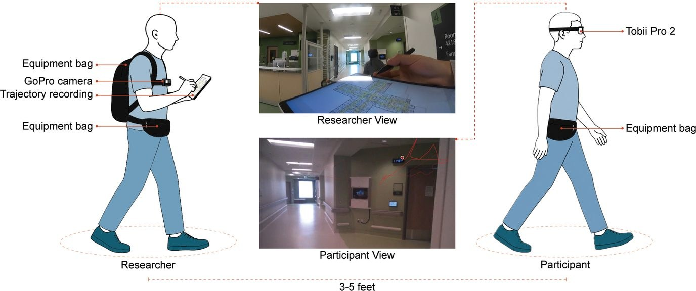

01
Effects of Window and Signage Presence on Wayfinding Route Choices in a Healthcare Setting
This project investigates how an implicit architectural cue, the presence of a window, interacts with an explicit cue, signage, to influence route choice behavior in a real-world hospital environment.
Under review